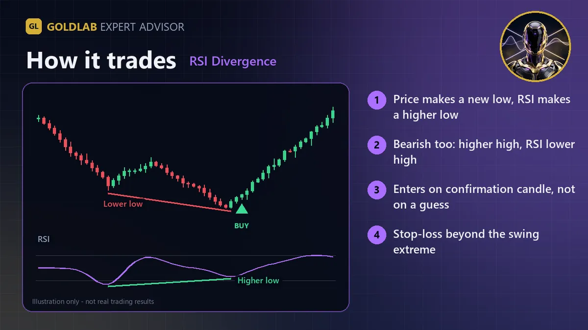
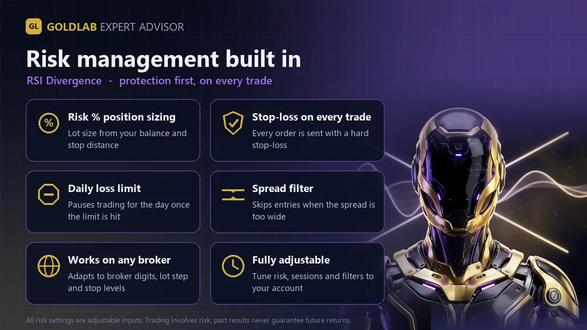

GoldLab RSI Divergence is a fully automated Expert Advisor for MetaTrader 5. It is designed for XAUUSD (gold) and also runs on other symbols such as EURUSD.
How it trades
- Swing detection - swing lows and highs are found on closed bars with a configurable strength (default 3 bars on each side). Nothing repaints: a swing only counts once the bars after it have closed.
- Regular bullish divergence - price makes a lower low while RSI makes a higher low, and RSI at the second low is below the set level (default 50).
- Regular bearish divergence - price makes a higher high while RSI makes a lower high, with RSI at the second high above the set level.
- Confirmation candle - within a few bars of the swing, a candle must close in the trade direction (by default also beyond the previous bar's high / low) before any order is placed.
- Stop-loss beyond the swing low / high plus an ATR buffer (with a minimum ATR distance). Take-profit at a fixed R-multiple (default 2R) or at the opposite swing between the two pivots (falls back to R if that swing is closer than 1R).
- Each divergence is traded only once. Optional break-even, and an opposite divergence can close the open trade.
Risk management (built in)
- Every trade is opened with a stop-loss. There is no martingale, no grid and no averaging down.
- Position size from risk % of balance (default 1%) or a fixed lot; lots are normalised to the broker's min / max / step and reduced if free margin is not enough.
- Daily loss limit: no new trades for the rest of the day once equity is down the set % from the day-start balance.
- Max spread filter, optional trading-hours filter, and no orders while the market is closed or trading on the symbol is disabled.
- Stop-loss / take-profit are always placed outside the broker's stops and freeze levels.
- Works on hedging and netting accounts (on netting accounts it opens only when the symbol has no position).
Inputs and default settings
| Input | Default | Description |
|---|---|---|
| Signal timeframe | Current | Timeframe for swings and RSI |
| RSI period | 14 | RSI length |
| Swing strength | 3 | Bars on each side that define a swing |
| Look back (bars) | 60 | How far back to look for the previous swing |
| Min bars between swings | 5 | Minimum distance between the two swings |
| Bullish RSI max / Bearish RSI min | 50 / 50 | RSI zone for the 2nd swing |
| Confirmation bars | 3 | Bars allowed for the confirmation candle |
| Require break of previous bar | true | Confirmation must close beyond the previous bar's high / low |
| ATR period | 14 | ATR for stop buffer |
| Stop buffer / min stop (x ATR) | 0.2 / 0.5 | Stop placement beyond the swing |
| Take-profit mode | R-multiple | Or opposite swing |
| Take-profit (R) | 2.0 | Target as a multiple of the stop distance |
| Break-even at (R) | 1.0 | Move stop to entry at this profit (0 = off) |
| Close on opposite divergence | true | Exit when the opposite signal appears |
| Risk per trade (%) | 1.0 | Risk as % of balance, used when Fixed lot = 0 |
| Fixed lot | 0.0 | Fixed lot size (0 = use Risk %) |
| Maximum lot | 10.0 | Upper cap per trade |
| Use minimum lot if risk lot is too small | true | On small accounts trade the broker minimum instead of skipping |
| Magic number | 20271003 | Change it to run several copies on one account |
| Daily loss limit (%) | 3.0 | Stop opening trades for the day at this loss (0 = off) |
| Max spread (points) | 60 | 2-digit gold / 4-digit FX scale (100 = 1.00 USD on gold); 0 = off |
| Restrict to trading hours | false | Optional start / end hour (server time) for new entries |
| Max slippage (points) | 30 | Same scale as spread |
| Show info panel | false | Optional status panel on the chart |
Recommended setup
- Symbol / timeframe: XAUUSD H1 (designed for gold); also works on FX majors. Any timeframe from M15 to H4.
- Account: any (hedging or netting), any deposit that allows the broker's minimum lot with a sensible risk %.
- VPS: recommended for uninterrupted operation.
Honest notes
- No trading system can guarantee profit. Past performance, in the tester or live, does not guarantee future results.
- Always test the EA in the MetaTrader 5 Strategy Tester and then on a demo account before using real money, with your broker's own data and spread.
- Session hours are in your broker's server time - check your broker's time zone and adjust the hour inputs if needed.
- Start with a low risk % and use money you can afford to lose.


Plan your risk before you run it
- Check the lot the EA will use for your balance and stop with the XAUUSD lot size calculator and the margin calculator.
- Compare targets and stops with the risk reward calculator.
- How to Set a Stop Loss on Gold (ATR Method)
- Risk Per Trade: the 1% Rule with Gold Examples
FAQ
What is RSI divergence?
Bullish divergence is a lower low in price with a higher low in the RSI; bearish divergence is a higher high in price with a lower high in the RSI. It shows momentum fading, but it is not a guarantee of a reversal, so every trade has a stop-loss.
Is there a free demo?
Yes. Every MQL5 Market product has a free demo that runs in the MetaTrader 5 Strategy Tester, so you can test it on your broker's own data before buying.
Does it use martingale, grid or averaging down?
No. Every position is opened with a stop-loss, the lot size comes from your risk % (or a fixed lot), and there is a daily loss limit.
Which broker and account do I need?
Any MetaTrader 5 broker that offers XAUUSD, on a hedging or netting account. A low-spread account and a VPS for 24/5 operation are recommended.
Can this EA guarantee profits?
No. No trading system wins every trade, and backtest or past results do not guarantee future results. Start on a demo account with the default risk.
Trading gold, forex and CFDs is high risk and you can lose your capital. This page is for information only and is not investment advice. Illustrations are not trading results.